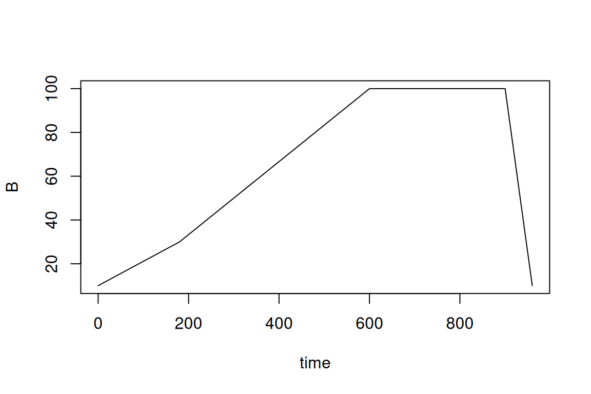

9.12 Predicting toxicities and concentrations (MS2Tox and MS2Quant integration)
The MS2Tox and MS2Quant R packages predict toxicities and feature concentrations using a machine learning approach. The predictions are performed with either SMILES data or fingerprints calculated from MS/MS data with SIRIUS+CSI:FingerID. While using SMILES data is generally more accurate, using MS/MS fingerprints is generally faster and may be more suitable for features without know or suspected structure.
In patRoon the predictions are done in two steps:
- The LC50 values (toxicity prediction) or response factors (concentration prediction) are calculated for given SMILES or MS/MS fingerprint data using
MS2Tox/MS2Quant. This step is performed by thepredictTox()/predictConcs()method function. - The predicted LC50 values are used to assign toxicities/concentrations to feature data. This is performed by the
calculateTox()/calculateConcs()method function.
Various workflow data can be used to perform the predictions for step 1:
- Suspect hits that were obtained with
screenSuspects(see suspect screening). - Formula annotations obtained with
SIRIUS+CSI:FingerID. - Compound annotations obtained with
SIRIUS+CSI:FingerID. - Compound annotations obtained with other algorithms, e.g.
MetFrag.
For a and d SMILES is used to perform the calculations, for b MS/MS fingerprints are used and for c either can be used.
NOTE For option b, make sure that
getFingerprints=TRUEand SIRIUS logins are handled when runninggenerateFormulas()in order to obtain fingerprints.
9.12.1 Predicting toxicities
Some example workflows are shown below:
# Calculate toxicity for suspect hits.
fGroupsSuspTox <- predictTox(fGroupsSusp)
fGroupsSuspTox <- calculateTox(fGroupsSuspTox)
# Calculate toxicity for compound hits. Limit to the top 5 to reduce calculation time.
compoundsTop5 <- filter(compounds, topMost = 5)
compoundsTox <- predictTox(compoundsTop5)
fGroupsTox <- calculateTox(fGroups, compoundsTox)It is also possible to calculate toxicities from multiple workflow objects:
fGroupsSuspTox <- predictTox(fGroupsSusp) # as above
# Predict toxicities from compound candidates, using both SMILES and MS/MS fingerprints
# compoundsSuspSIR is an object produced with generateCompounds() with algorithm="sirius"
compoundsSuspSIRTox <- predictTox(compoundsSuspSIR, type = "both")
# Assign toxicities to feature groups from both suspect hits and SIRIUS annotations
fGroupsSuspTox <- calculateTox(fGroupsSuspTox, compoundsSuspSIRTox)More details are in the reference manual: ?`pred-tox`.
9.12.2 Predicting concentrations
The workflow to predict concentrations is quite similar to predicting toxicities. However, before we can start we first have to specify the calibrants and the LC gradient elution program.
The calibrant data is used by MS2Quant to convert predicted ionization efficiencies to actual response factors, which are specific to the used LC instrument and methodology. For this purpose, several mixtures with known concentrations (i.e. standards) should be measured alongside your samples. The calibrants should be specified as a data.frame, for instance:
#> Calculating/Validating chemical data... Done!#> ================================================================================
#> Found 24/30 suspects (80.00%) with 24 hits in total| name | SMILES | intensity | conc | rt |
|---|---|---|---|---|
| Atrazine | CCNc1nc(nc(n1)Cl)NC(C)C | 32708 | 1 | 336.6 |
| Atrazine | CCNc1nc(nc(n1)Cl)NC(C)C | 66880 | 2 | 336.6 |
| Atrazine | CCNc1nc(nc(n1)Cl)NC(C)C | 174087 | 5 | 336.6 |
| Atrazine | CCNc1nc(nc(n1)Cl)NC(C)C | 371192 | 10 | 336.6 |
| Atrazine | CCNc1nc(nc(n1)Cl)NC(C)C | 806749 | 25 | 336.6 |
| Atrazine | CCNc1nc(nc(n1)Cl)NC(C)C | 1852591 | 50 | 336.6 |
| Carbamazepine | c1ccc2c(c1)C=Cc3ccccc3N2C(=N)O | 25231 | 1 | 349.2 |
| Carbamazepine | c1ccc2c(c1)C=Cc3ccccc3N2C(=N)O | 47831 | 2 | 349.2 |
| Carbamazepine | c1ccc2c(c1)C=Cc3ccccc3N2C(=N)O | 118843 | 5 | 349.2 |
| Carbamazepine | c1ccc2c(c1)C=Cc3ccccc3N2C(=N)O | 211395 | 10 | 349.2 |
| Carbamazepine | c1ccc2c(c1)C=Cc3ccccc3N2C(=N)O | 545192 | 25 | 349.2 |
| Carbamazepine | c1ccc2c(c1)C=Cc3ccccc3N2C(=N)O | 1083568 | 50 | 349.2 |
| DEET | CCN(CC)C(=O)c1cccc(c1)C | 45061 | 1 | 355.8 |
| DEET | CCN(CC)C(=O)c1cccc(c1)C | 84859 | 2 | 355.8 |
| DEET | CCN(CC)C(=O)c1cccc(c1)C | 228902 | 5 | 355.8 |
| DEET | CCN(CC)C(=O)c1cccc(c1)C | 434161 | 10 | 355.8 |
| DEET | CCN(CC)C(=O)c1cccc(c1)C | 1133166 | 25 | 355.8 |
| DEET | CCN(CC)C(=O)c1cccc(c1)C | 2385472 | 50 | 355.8 |
| Venlafaxine | CN(C)CC(C1=CC=C(C=C1)OC)C2(CCCCC2)O | 41465 | 1 | 324.0 |
| Venlafaxine | CN(C)CC(C1=CC=C(C=C1)OC)C2(CCCCC2)O | 89684 | 2 | 324.0 |
| Venlafaxine | CN(C)CC(C1=CC=C(C=C1)OC)C2(CCCCC2)O | 230890 | 5 | 324.0 |
| Venlafaxine | CN(C)CC(C1=CC=C(C=C1)OC)C2(CCCCC2)O | 400385 | 10 | 324.0 |
| Venlafaxine | CN(C)CC(C1=CC=C(C=C1)OC)C2(CCCCC2)O | 1094329 | 25 | 324.0 |
| Venlafaxine | CN(C)CC(C1=CC=C(C=C1)OC)C2(CCCCC2)O | 1965139 | 50 | 324.0 |
The intensity column should contain either the peak intensity (height) or area. Note that some feature detection algorithms can sometimes produce inaccurate peak areas, and the area determination methodology is often different among algorithms. For this reason, using peak intensities may be more reliable, however, it is worth testing this with your data.
It is also possible to use the getQuantCalibFromScreening() function to automatically create the calibrant table from feature group data:
calibList <- data.frame(...) # this should be a suspect list with your calibrants
fGroups <- screenSuspects(fGroups, calibList) # screen for the calibrants
concs <- data.frame(...) # concentration data for each calibrant compound, see below
calibrants <- getQuantCalibFromScreening(fGroups, concs)
calibrants <- getQuantCalibFromScreening(fGroups, concs, areas = TRUE) # obtain feature areas instead of intensitiesThe first step is to perform a screening for the calibrant compounds. Please ensure that this list contains SMILES data, and to ensure correct feature assignment it is highly recommended to include retention times. The second requirement for getQuantCalibFromScreening() is a table with concentrations for each calibrant compound, e.g.:
concs <- data.frame(
name = c("DEET", "1h-benzotriazole", "Caffeine", "Atrazine", "Carbamazepine", "Venlafaxine"),
standard_1 = c(1.00, 1.05, 1.10, 0.99, 1.01, 1.12),
standard_2 = c(2.00, 2.15, 2.20, 1.98, 2.02, 1.82),
standard_5 = c(5.01, 5.05, 5.22, 5.00, 4.88, 4.65),
standard_10 = c(10.2, 10.11, 10.23, 11.77, 11.75, 12.13),
standard_25 = c(25.3, 25.12, 25.34, 24.89, 24.78, 24.68),
standard_50 = c(50.34, 50.05, 50.10, 49.97, 49.71, 50.52)
)
concs#> name standard_1 standard_2 standard_5 standard_10 standard_25 standard_50
#> 1 DEET 1.00 2.00 5.01 10.20 25.30 50.34
#> 2 1h-benzotriazole 1.05 2.15 5.05 10.11 25.12 50.05
#> 3 Caffeine 1.10 2.20 5.22 10.23 25.34 50.10
#> 4 Atrazine 0.99 1.98 5.00 11.77 24.89 49.97
#> 5 Carbamazepine 1.01 2.02 4.88 11.75 24.78 49.71
#> 6 Venlafaxine 1.12 1.82 4.65 12.13 24.68 50.52The concentrations are specified separately for each calibrant compound. The column names should follow the names of the replicate assigned to the standards. The concentration unit is µg/l by default. The next section describes how this can be changed.
NOTE The
getQuantCalibFromScreening()function ignores any IMS features in IMS workflows with post mobility assignment, as the calibration procedure does not take any differences due to IMS separation into account.
The gradient elution program is also specified by a data.frame, which for every time point (in seconds!) describes the percentage of ‘B’. In this case, ‘B’ represents the total amount of organic modifier.
eluent <- data.frame(
time = c(0, 180, 600, 900, 960),
B = c(10, 30, 100, 100, 10)
)
plot(eluent, type = "l")
#> time B
#> 1 0 10
#> 2 180 30
#> 3 600 100
#> 4 900 100
#> 5 960 10Then, the workflow to predict concentrations is very similar then predicting toxicities (previous section):
# Calculate concentrations for suspect hits.
fGroupsSuspConc <- predictRespFactors(
fGroupsSusp,
calibrants = calibrants, eluent = eluent,
organicModifier = "MeCN", # organic modifier: MeOH or MeCN
pHAq = 4 # pH of the aqueous part of the mobile phase
)
# set areas to TRUE if the calibrant table contains areas
fGroupsSuspConc <- calculateConcs(fGroupsSuspConc, areas = FALSE)As was shown for toxicities it is possible to use different data sources (e.g. compound annotations, suspects) for predictions.
More details are in the reference manual: ?`pred-quant`.
9.12.3 Toxicity and concentration units
The default unit for toxicity and concentration data is µg/l. However, this can be configured when calling the predictTox()/predictRespFactors() functions:
fGroupsSuspTox <- predictTox(fGroupsSusp) # default unit: ug/l
fGroupsSuspTox <- predictTox(fGroupsSusp, concUnit = "ug/l") # same as above
fGroupsSuspTox <- predictTox(fGroupsSusp, concUnit = "mM") # millimolar
fGroupsSuspTox <- predictTox(fGroupsSusp, concUnit = "log mM") # unit used by MS2Tox
# calculated concentrations are ng/l, calibrants are specified in ug/l
# (by default calibConcUnit=concUnit)
fGroupsSuspConc <- predictRespFactors(
fGroupsSusp, calibrants = calibrants, eluent = eluent,
organicModifier = "MeCN", pHAq = 4,
concUnit = "ng/l", calibConcUnit = "ug/l"
)See the reference manuals (?`pred-tox`/?`pred-quant`) For more details on which units can be specified
9.12.4 Inspecting predicted values
The raw toxicity and concentration data assigned to feature groups can be retrieved with the toxicities() and concentrations() method functions, respectively.
#> group type candidate candidate_name LC50
#> <char> <char> <char> <char> <num>
#> 1: M120_R268_30 suspect [nH]1nnc2ccccc12 1H-benzotriazole 24327.64
#> 2: M137_R249_53 suspect NC(=O)Nc1ccccc1 N-Phenyl urea 68490.93
#> 3: M146_R225_70 suspect Oc1ccc2ccccc2n1 2-Hydroxyquinoline 11815.10
#> 4: M146_R248_69 suspect Oc1ccc2ccccc2n1 2-Hydroxyquinoline 11815.10
#> 5: M146_R309_68 suspect Oc1ccc2ccccc2n1 2-Hydroxyquinoline 11815.10#> group type candidate candidate_name standard-pos-1 standard-pos-2 standard-pos-3
#> <char> <char> <char> <char> <num> <num> <num>
#> 1: M120_R268_30 suspect [nH]1nnc2ccccc12 1H-benzotriazole 43.070773 39.905306 35.21956
#> 2: M137_R249_53 suspect NC(=O)Nc1ccccc1 N-Phenyl urea 18.485430 19.864756 17.36268
#> 3: M146_R225_70 suspect Oc1ccc2ccccc2n1 2-Hydroxyquinoline 15.700200 17.662215 18.49330
#> 4: M146_R248_69 suspect Oc1ccc2ccccc2n1 2-Hydroxyquinoline 19.030263 20.207821 19.54181
#> 5: M146_R309_68 suspect Oc1ccc2ccccc2n1 2-Hydroxyquinoline 7.978394 8.646156 8.67157If there were multiple candidates for a single feature group then these are split over the table rows:
#> group type candidate candidate_name LC50
#> <char> <char> <char> <char> <num>
#> 1: M120_R268_30 compound C1=CC2=C(C=NN2)N=C1 1H-pyrazolo[4,5-b]pyridine 72730.44
#> 2: M120_R268_30 compound C1=CC2=C(N=C1)N=CN2 1H-imidazo[4,5-b]pyridine 135239.04
#> 3: M120_R268_30 compound C1=CC2=NNN=C2C=C1 2H-benzotriazole 29689.80
#> 4: M120_R268_30 compound C1=CN2C(=CC=N2)N=C1 pyrazolo[1,5-a]pyrimidine 49409.73
#> 5: M120_R268_30 compound C1=CNC2=CN=CN=C21 5H-pyrrolo[3,2-d]pyrimidine 59647.93
#> ---
#> 16: M192_R355_191 compound CCN(CC)C(=O)C1=CC=C(C=C1)C N,N-diethyl-4-methylbenzamide 30892.60
#> 17: M192_R355_191 compound CCN(CC)C(=O)C1=CC=CC(=C1)C N,N-diethyl-3-methylbenzamide 58173.94
#> 18: M192_R355_191 compound CCN(CC)C(=O)C1=CC=CC=C1C N,N-diethyl-2-methylbenzamide 26544.17
#> 19: M192_R355_191 compound CCN(CC)C(=O)CC1=CC=CC=C1 N,N-diethyl-2-phenylacetamide 32385.07
#> 20: M192_R355_191 compound C[C@H]1[C@@H](OCCN1C)C2=CC=CC=C2 (2S,3S)-3,4-dimethyl-2-phenylmorpholine 81974.51The as.data.table() method function, which was discussed previously, can be used to summarize toxicity and concentration values.
# NOTE: NA values are filtered and columns are subset for readability
as.data.table(fGroupsTox)[!is.na(LC50), c("group", "LC50", "LC50_types")]#> group LC50 LC50_types
#> <char> <num> <char>
#> 1: M120_R268_30 69343.39 compound
#> 2: M137_R249_53 265983.07 compound
#> 3: M146_R309_68 7442.69 compound
#> 4: M192_R355_191 45994.06 compoundconcCols <- c("group", paste0(analyses(fGroupsSuspConc), "_conc"), "conc_types")
as.data.table(fGroupsSuspConc)[!is.na(conc_types), concCols, with = FALSE]#> group standard-pos-1_conc standard-pos-2_conc standard-pos-3_conc conc_types
#> <char> <num> <num> <num> <char>
#> 1: M120_R268_30 43.070773 39.905306 35.21956 suspect
#> 2: M137_R249_53 18.485430 19.864756 17.36268 suspect
#> 3: M146_R309_68 7.978394 8.646156 8.67157 suspect
#> 4: M146_R248_69 19.030263 20.207821 19.54181 suspect
#> 5: M146_R225_70 15.700200 17.662215 18.49330 suspectThe as.data.table() method function aggregates the data for a feature group in case multiple candidates were assigned to it. By default the values are mean averaged, but this be changed with the toxAggrParams/concAggrParams arguments, for instance:
# as above, but aggregate by taking maximum values
as.data.table(fGroupsTox, toxAggrParams = getDefPredAggrParams(max))[!is.na(LC50), c("group", "LC50", "LC50_types")]#> group LC50 LC50_types
#> <char> <num> <char>
#> 1: M120_R268_30 135239.04 compound
#> 2: M137_R249_53 937420.55 compound
#> 3: M146_R309_68 11936.93 compound
#> 4: M192_R355_191 81974.51 compoundIf the as.data.table() method is used on suspect screening results, and predictions were performed directly for suspect hits, then predicted values can be reported for individual suspect match instead of aggregating them per feature group:
# Reports predicted values for each suspect separately. If multiple suspects are assigned to a feature group,
# then each suspect match is split into a different row.
as.data.table(fGroupsSuspTox, collapseSuspects = NULL)Finally, the reporting functionality can be used to overview all predicted values, both aggregated and raw.
9.12.5 Using predicted values to prioritize data
The filter() method function that was introduced before can also be used to filter data based on predicted toxicities, response factors and concentrations. For instance, this allows you to remove annotation candidates which are unlikely to be toxic or sensitive enough to be detected or any features with very low concentrations. Some examples are shown below.
# compoundsSuspSIRTox is an object with predicted toxicities (LC50 values) for each candidate
# we can use the common scoreLimits filter to select a range of allowed values (min/max)
compoundsSuspSIRToxF <- filter(compoundsSuspSIRTox, scoreLimits = list(LC50_SMILES = c(0, 1E4)))
# for suspects with predicted toxicities/response factors there are dedicated filters
fGroupsSuspConcF <- filter(fGroupsSuspConc, minRF = 5E4) # remove suspect hits with response factor <5E4
fGroupsSuspToxF <- filter(ffGroupsSuspTox, maxLC50 = 100) # remove suspect hits with LC50 values > 100
# similarly, for feature data there are dedicated filters.
# note that these aggregate data prior to filtering (see previous section)
fGroupsConcF <- filter(fGroupsConc, absMinConc = 0.02)
# only keep features with concentrations that are at least 1% of their toxicity
# note that both concentrations/toxicity values should have been calculated with calculateConcs()/calculateTox()
fGroupsConcToxF <- filter(fGroupsConcTox, absMinConcTox = 0.01)
# also get rid of features without concentrations (these are ignored by default)
fGroupsConcF <- filter(fGroupsConc, absMinConc = 0.02, removeNA = TRUE)
# like as.data.table we can configure how values are aggregated
# here the minimum is used instead of the default mean
fGroupsToxF <- filter(fGroupsTox, absMaxTox = 5E3, predAggrParams = getDefPredAggrParams(min))More details are found in the reference manual (?`feature-filtering`).